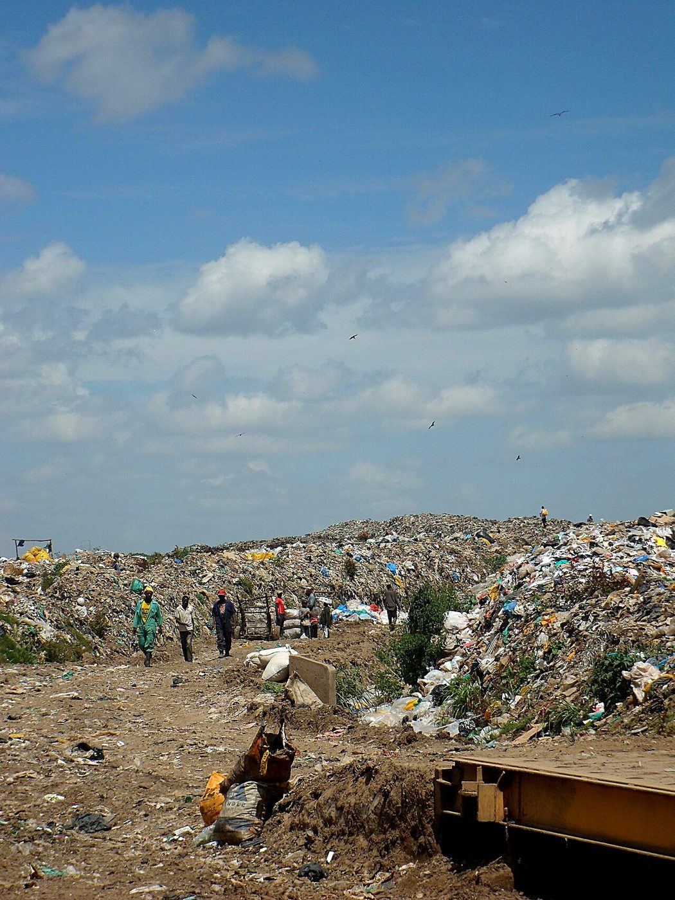

I was born and raised in Dandora, in Nairobi’s Eastlands. Dandora is full of hard-working, talented, creative people. It is also home to one of the largest dumpsites in East Africa. Every day, more than 2,000 tonnes of Nairobi’s rubbish arrive here, on a site that was declared full in 2001. Source D1
If you grow up here, the dumpsite is not a news story. It is the smoke you breathe in the evening, the smell after the rain, and the trucks that never stop coming.
Dandora does not lack talent. It lacks opportunity.
What life beside the dumpsite looks like.
Too few jobs
Widespread unemployment and poverty push many young people towards whatever work they can find. For thousands, that work is picking through the dumpsite for plastic, metal and paper to sell. Source D2
Very low pay
Most waste pickers earn KES 300–500 a day, and many earn as little as KES 200. Plastic film, the bags and wrappers that make up much of the waste, sells for only a few shillings a kilo, so most of it is left to burn. Source D3
Crime and lost young lives
Without work or hope, too many young people are pulled into crime. Too many have lost their lives to mob justice or in confrontations with the police. Others become parents early and leave school. Every one of them had potential.
Health
Smoke from burning waste and toxic materials affect everyone nearby. A UNEP-commissioned study found that half the children tested near the dumpsite had high levels of lead in their blood, and almost half had breathing problems. Source D4

A mountain of value, going to waste.
Only about 15% of Nairobi’s waste is ever recovered. Source D5 Much of what is left is exactly what Smart Asphalt needs: low-value plastic film and used cooking oil.
The same waste that makes people sick could pay their wages, and could help build the roads Kenya keeps paying to repair.
Turning waste into work and a local economy.
Paid, safer jobs
A sorting and processing hub near the dumpsite. The pilot alone employs six waste pickers at a fair, regular wage, with protective equipment.
A better price for waste
We buy sorted plastic film above today’s price, giving value to the material that currently earns almost nothing.
Skills that last
Sorting, washing, shredding, quality testing and road work: skills that lead to further jobs, not just a day’s pay.
Money stays local
Road builders pay for our additive, and part of that money flows back to Dandora through wages and material purchases.
Less burning
Plastic that goes into roads is plastic that is not burned on the dumpsite, which means cleaner air for families nearby.
A model to grow
If it works in Dandora, the same model can be copied at other dumpsites across Kenya and East Africa.
Honest note: Smart Asphalt alone will not clear Dandora; the dumpsite is far too big. What it can do is prove that the waste has value, and create a first set of fair jobs that can grow. We will publish job and income numbers from the pilot rather than promise them now.
The first test road will be in Dandora.
Our pilot will be laid in a private truck-parking yard in Dandora, where heavy trucks will drive over Smart Asphalt and normal asphalt side by side every day. If it works under Dandora’s trucks, it can work on Kenya’s roads.

Leslie Owuor
Born and raised in Dandora. Civil Engineering student at Jomo Kenyatta University of Agriculture and Technology (JKUAT), trained in pavements and materials.
Leslie led a four-phase study of self-healing and waste-based road binders, checked its key facts against public sources, and built the healing simulator and this website. He is now assembling the partners to test it: a materials laboratory, a road agency, Dandora’s waste-picker groups and business mentors.